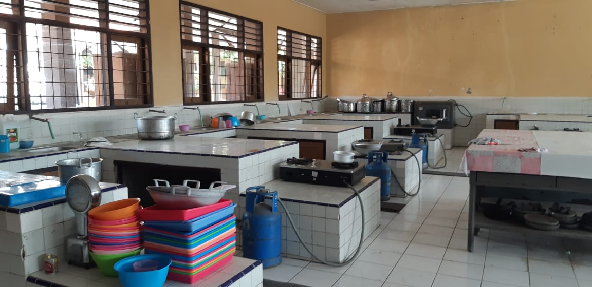
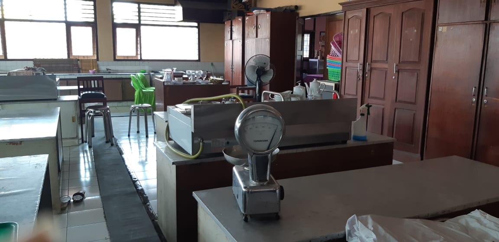
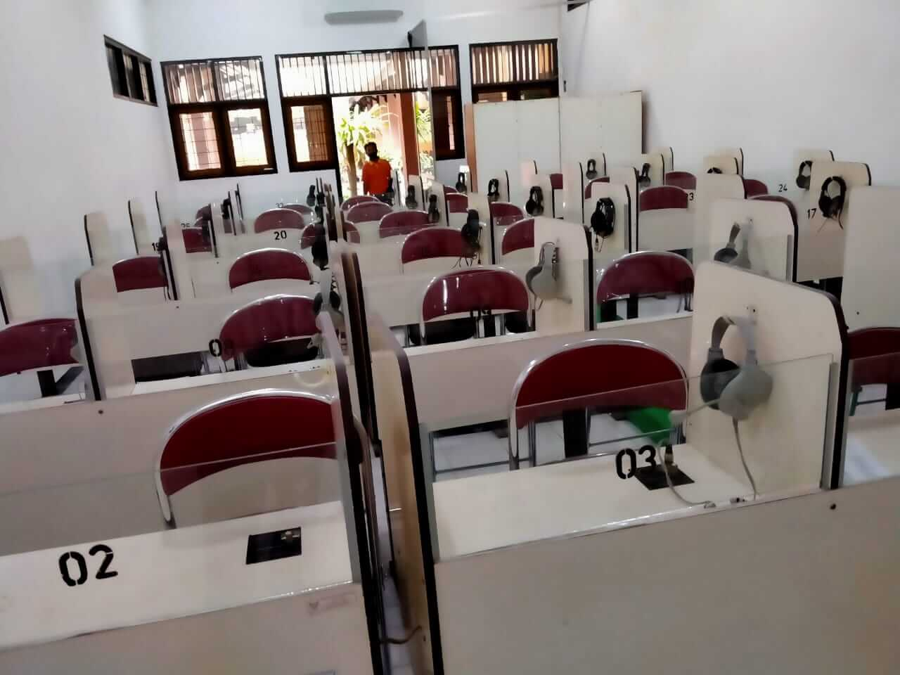
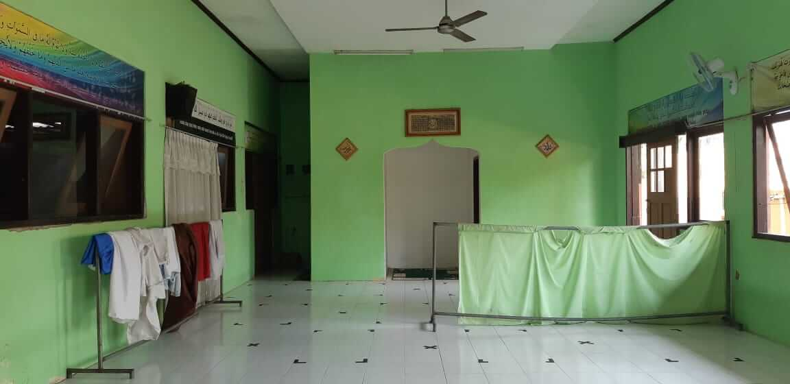
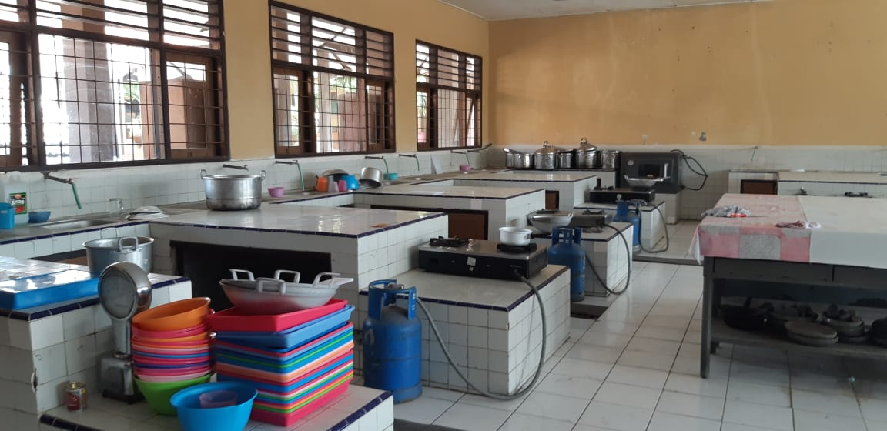
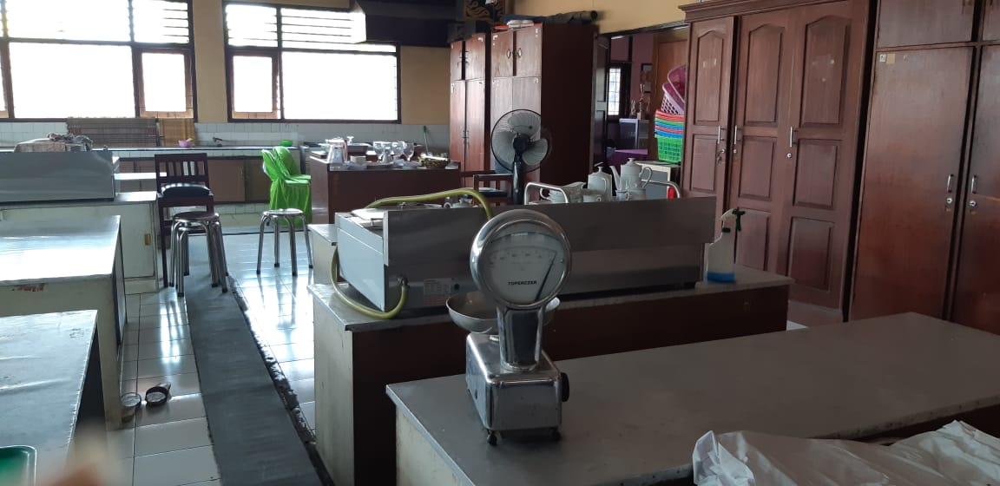
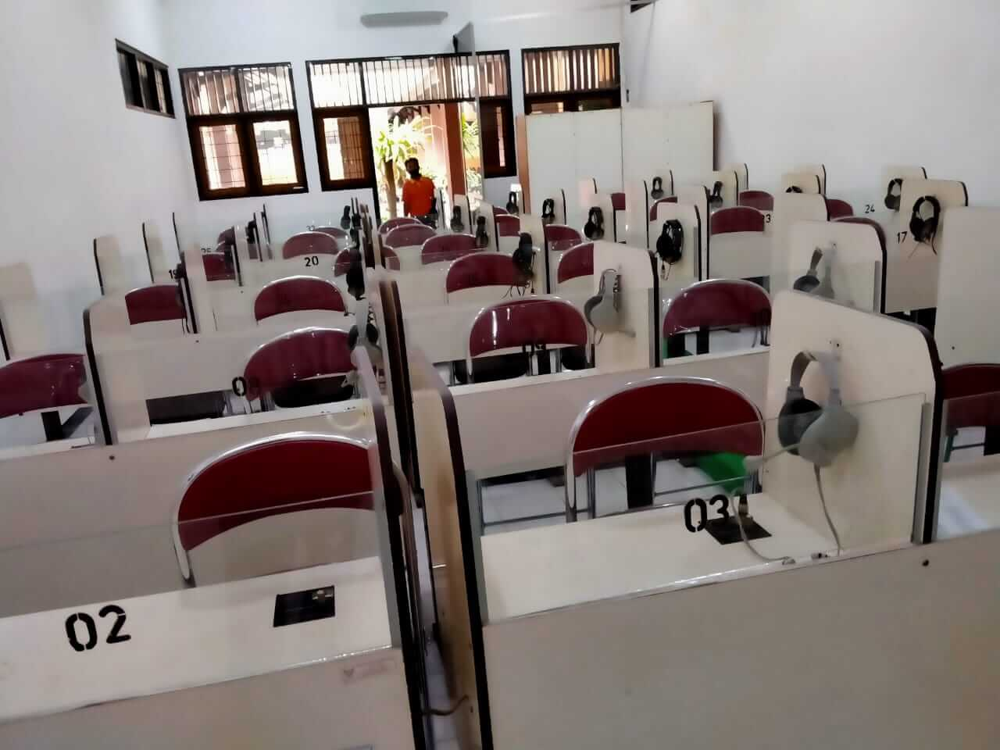
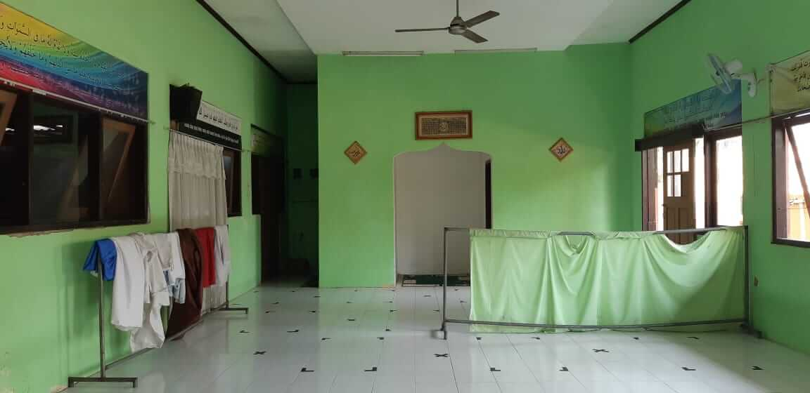

Bersama SMKN 3 Kediri, Mari Siapkan Masa Depan yang Gemilang!

Kepala Sekolah SMKN 3 KEDIRI
Kami bersyukur kepada Allah SWT atas terwujudnya website SMK Negeri 3 Kediri di smkn3kediri.sch.id. Terima kasih kepada semua yang telah mendukung dan membantu proses ini. Di tengah perkembangan teknologi informasi yang pesat, kami berupaya menyediakan informasi yang bermanfaat bagi siswa, guru, orang tua, dan masyarakat. Kami berharap website ini dapat memperkaya pengalaman pendidikan, mempermudah akses informasi tentang sekolah, serta mempererat hubungan dengan alumni. Semoga situs ini dapat menjadi jembatan komunikasi yang memperkuat keluarga besar SMK Negeri 3 Kediri, menuju pendidikan yang lebih baik dan berkualitas.
SMK Negeri 3 Kediri merupakan sekolah kejuruan yang beralamat di Jalan Hasanudin No.10 Kediri. Dalam perjalanannya sejak berdiri pada tahun 1950 sampai saat ini, SMK Negeri 3 Kediri telah mengalami 5 kali perubahan. Berawal di tahun 1950 dengan nama SKPN (Sekolah Kepandaian Putri Negeri), tahun 1955 berubah SKPN 4 Tahun, sebelas tahun kemudian menjadi SKKPN tepatnya tahun 1966. Pada tahun 1979 berubah menjadi SMKKN (Sekolah Menengah Kesejahteraan Keluarga Negeri). Di tahun 1996 berubah menjadi Sekolah Menengah Kejuruan Negeri 3 Kediri.
Visi kami adalah menjadikan sekolah yang unggul
berbasis IMTAQTEK, berkarakter pancasila, mampu berwirausaha, dan
peduli lingkungan.
Mushola, Perpustakaan, Laboratorium Komputer, Ruang Praktek Siswa Busana, Ruang Praktek Siswa Tata Kecantikan, Ruang Praktek Siswa Kuliner, Ruang Praktek Siswa Desain Komunikasi dan Visual, Lapangan Olahraga, Ruang UKS, Ruang OSIS, Sanggar Pramuka, Ruang PMR, Koperasi, Kantin
 






